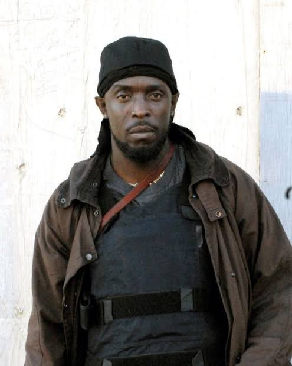
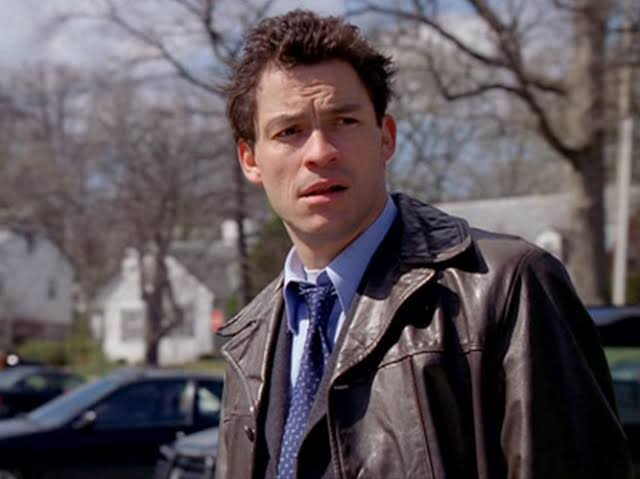
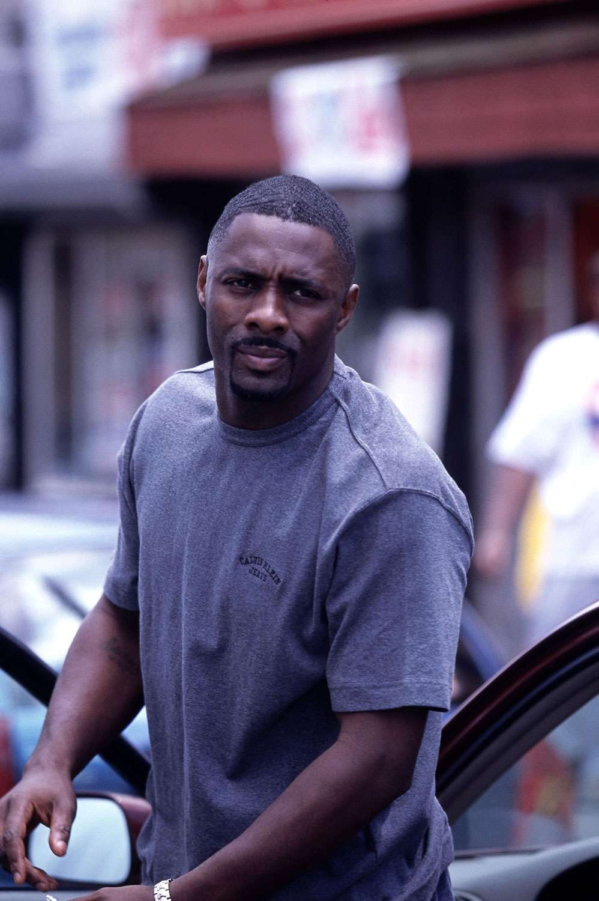

Omar ganha a vida roubando traficantes nas ruas de Baltimore. Ele frequentemente interage com o BPD. Conhecido por sua espingarda, sobretudo de lona e por sempre assobiar a cantiga "The Farmer in the Dell" ao se aproximar.

Omar Little patrulhando as ruas de Baltimore.Curiosidade sobre Omar
O personagem foi inspirado em uma pessoa real (Donnie Andrews) e o próprio ex-presidente Barack Obama o citou como seu personagem de TV favorito de todos os tempos.
Detetive James "Jimmy" McNulty

Detetive James "Jimmy" McNulty.
Um detetive de homicídios brilhante, mas incrivelmente autodestrutivo. Sua teimosia e total desrespeito pela cadeia de comando frequentemente o colocam em apuros com seus superiores, apesar de sua genialidade em desvendar casos arquivados.
Russell "Stringer" Bell

Russell "Stringer" Bell, o cérebro por trás do império de drogas.
O calculista braço direito do império das drogas de Avon Barksdale. Stringer tenta administrar o tráfico como um negócio corporativo legítimo, frequentando aulas de economia e aplicando regras rígidas de mercado nas ruas.
Música Tema
Ouça a clássica abertura "Way Down in the Hole", originalmente escrita por Tom Waits e regravada por diferentes artistas a cada nova temporada: